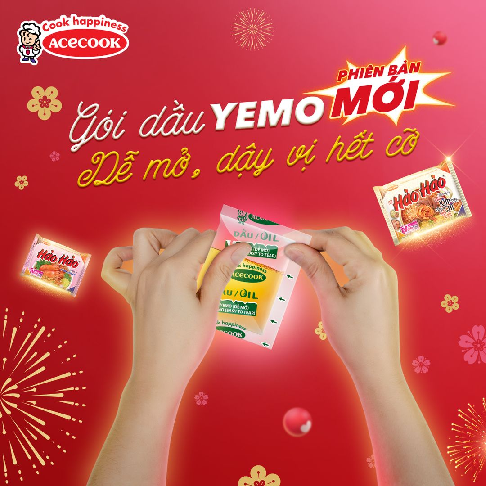

HLV Park Hang Seo nghẹn ngào viết tâm thư chia tay bóng đá Việt Nam
(Dân trí) - Nhà cầm quân người Hàn Quốc gửi lời cảm ơn tới Chính phủ Việt Nam, VFF, bầu Đức, giới truyền thông, người hâm mộ… đã luôn ủng hộ, sát cánh cùng ông trong hơn 5 năm qua.
Hợp đồng của HLV Park Hang Seo kết thúc vào ngày 31/1/2023. AFF Cup 2022 sẽ là giải đấu cuối cùng của ông Park trên cương vị HLV trưởng đội tuyển Việt Nam. Tối 21/11, HLV Park Hang Seo viết một bức tâm thư rất dài gửi người mộ Việt Nam. Chiến lược gia người Hàn Quốc trải lòng rất nhiều về quãng thời gian hơn 5 năm gắn bó với bóng đá Việt Nam.
"Xin chào, trong thời gian qua, tôi đã dành nhiều thời gian họp bàn ban huấn luyện, kiểm tra từng cầu thủ và chuẩn bị cho kỳ AFF Cup 2022 sắp tới. Thật khó để tin rằng giải đấu này sẽ là lần cuối cùng tôi dẫn dắt đội tuyển Quốc gia Việt Nam.
Những kỷ niệm đẹp trong 5 năm qua cùng với đội lại ùa về trong tôi. Tôi trân trọng từng khoảnh khắc đó và thông qua bức thư này, tôi muốn gửi sự cảm kích tới những người đã giúp đỡ tôi trong suốt thời gian qua", HLV Park Hang Seo mở lời.
"Có rất nhiều cá nhân, đoàn thể tôi muốn gửi lời cảm ơn, những người đã đồng hành với tôi trong chuyến hành trình này và cả những người phía sau hậu trường nữa.

HLV Park Hang Seo viết tâm thư đầy xúc động (Ảnh: Hải Long).
Bức thư sẽ khá dài bởi tôi muốn nhắc đến tên của từng người, nhưng tôi cảm thấy mình phải làm như vậy để bày tỏ sự chân thành của mình. Câu chữ có thể là không đủ để diễn tả tấm lòng của tôi nhưng hy vọng rằng mọi người sẽ cảm nhận được sự thành tâm này", ông Park viết tiếp trong tâm thư của mình.
"Đầu tiên, tôi muốn gửi lời đến toàn thể nhân dân và người hâm mộ bóng đá Việt Nam. Các bạn là những người ủng hộ tôi nhiều nhất trong 5 năm qua. Sự cổ vũ nhiệt thành của các bạn chính là nguồn động viên lớn nhất đến với từng cá nhân tại đội tuyển quốc gia Việt Nam trong giai đoạn khó khăn và đầy áp lực vừa qua.
Chính các bạn đã giúp tôi và toàn đội tốt hơn mỗi ngày, qua mỗi giải đấu. Với tư cách HLV trưởng của đội tuyển quốc gia, tôi muốn gửi lời cảm ơn chân thành nhất đến toàn thể người hâm mộ bóng đá Việt Nam.
Tôi muốn gửi lời cảm ơn đến Chủ tịch nước Nguyễn Xuân Phúc và toàn thể các thành viên Chính phủ vì những hỗ trợ về mặt tài chính và công tác quản lý. Tôi hiểu rằng việc đầu tư bóng đá từ cấp độ Chính phủ là khó khăn như thế nào. Đây là không phải một việc dễ dàng để đề nghị nhưng Chủ tịch nước và Chính phủ Việt Nam đã luôn ủng hộ hết mức có thể", HLV Park viết.
"Tiếp đến là các ban lãnh đạo và thành viên của Liên đoàn Bóng đá Việt Nam, những người đã luôn san sẻ niềm vui, nỗi buồn cùng tôi trong 5 năm. Với lá thư này, tôi thành tâm ghi nhận những cống hiến của họ cho đội tuyển quốc gia

HLV Park Hang Seo chia tay bóng đá Việt Nam sau AFF Cup 2022 (Ảnh: Mạnh Quân).
Tôi muốn gửi lời cảm ơn đến các vị lãnh đạo của giải vô địch quốc gia V-League. Việc triệu tập các cầu thủ cho đội tuyển quốc gia không phải là một câu chuyện dễ dàng khi xét tới giải đấu và lợi ích của mỗi CLB. Thế nhưng, các vị lãnh đạo luôn thấu hiểu cho nhiệm vụ của đội tuyển quốc gia.
Sự thành công của đội tuyển đến từ chính sự hy sinh đó. Tôi tin rằng V-League luôn là lá cờ đầu của nền bóng đá nước nhà và sẽ đồng hành với vinh quang của bóng đá Việt Nam", HLV Park Hang Seo chia sẻ.
Chiến lược gia người Hàn Quốc đặc biệt cảm ơn tới các thành viên ban huấn luyện, cầu thủ, giới truyền thông: "Để chinh phục mục tiêu chung, chúng ta cần đến sự tận tâm từ toàn thể các thành viên ban huấn luyện. Tôi muốn được dành sự tôn trọng đến những thành viên ban huấn luyện đã tận hiến để hoàn thành nhiệm vụ được giao.
Nỗ lực cống hiến trong công việc của họ xứng đáng được ngợi ca. Nhìn lại những giải đấu cấp đội tuyển lẫn đội trẻ U23 trong 5 năm qua, tôi không thể nào tự hào hơn về các cầu thủ. Thay mặt toàn thể ban huấn luyện, tôi muốn bày tỏ sự cảm kích và tôn trọng đến các cầu thủ đáng mến của chúng ta. Nỗ lực của từng cá nhân và tập thể cộng hưởng với tài năng đã tạo nên thành quả phi thường. Cảm ơn các bạn rất nhiều.

HLV Park Hang Seo có hơn 5 năm rất thành công cùng bóng đá Việt Nam (Ảnh: Hải Long).
Tôi không thể nào không nhắc đến các nhà báo, phóng viên và các đơn vị truyền thông đã hoàn thành xuất sắc việc truyền tải đến khán giả quá trình và sự thành công của bóng đá Việt Nam. Tôi rất cảm kích vì những gì các bạn đã làm đóng vai trò rất lớn để xây dựng nên sự đoàn kết cho bóng đá Việt Nam".
Đặc biệt, ông Park đã nói về bầu Đức với một sự cảm ơn chân thành: "Về mặt cá nhân, tôi muốn gửi lời cảm ơn đặc biệt đến ông Đoàn Nguyên Đức, Chủ tịch HA Gia Lai. Ông ấy là người đóng vai trò quan trọng với quyết định đến Việt Nam làm việc của tôi. Tôi biết ơn sự động viên không ngừng nghỉ của ông trong quãng thời gian công tác tại Việt Nam".
"Tôi không thể giấu nổi sự bồi hồi khi nhìn lại hành trình 5 năm tại Việt Nam, nhưng giờ là lúc tạm đặt cảm xúc sang một bên để khoác lên mình tấm áo chiến binh Việt Nam. Tôi kêu gọi sự ủng hộ và cổ vũ của các bạn dành cho Đội tuyển Quốc gia Việt Nam ở giải đấu sắp tới. Hẹn gặp lại các bạn trên sân. Cảm ơn!", HLV Park Hang Seo chốt lại.

